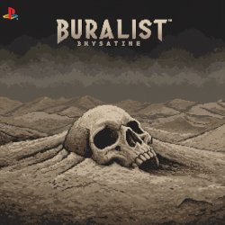

A jovem Elara e seu fiel cão, Pipoca, embarcam em uma singela jornada por um mundo de pixel art. Movidos pela curiosidade após encontrarem um mapa rabiscado, eles exploram cenários encantadores, resolvem pequenos desafios e desfrutam da companhia um do outro em busca de novas descobertas.

BURALIST
Desenvolvedora:
Brysatine Studios.
Data de Lançamento:
10 de Outubro de 2022.
Onde Comprar:
Steam & Epic Games Store.
Nota dos Jogadores:
8.5/10.
SINOPSE BURALIST
Em "Buralist", o jogador perdido em um deserto nebuloso e inóspito explora ruínas em busca de respostas. Sem memórias e sob uma atmosfera opressora, a jornada intensifica o isolamento e a sensação de uma presença sinistra, testando a sanidade na busca pela verdade em um mundo implacável.